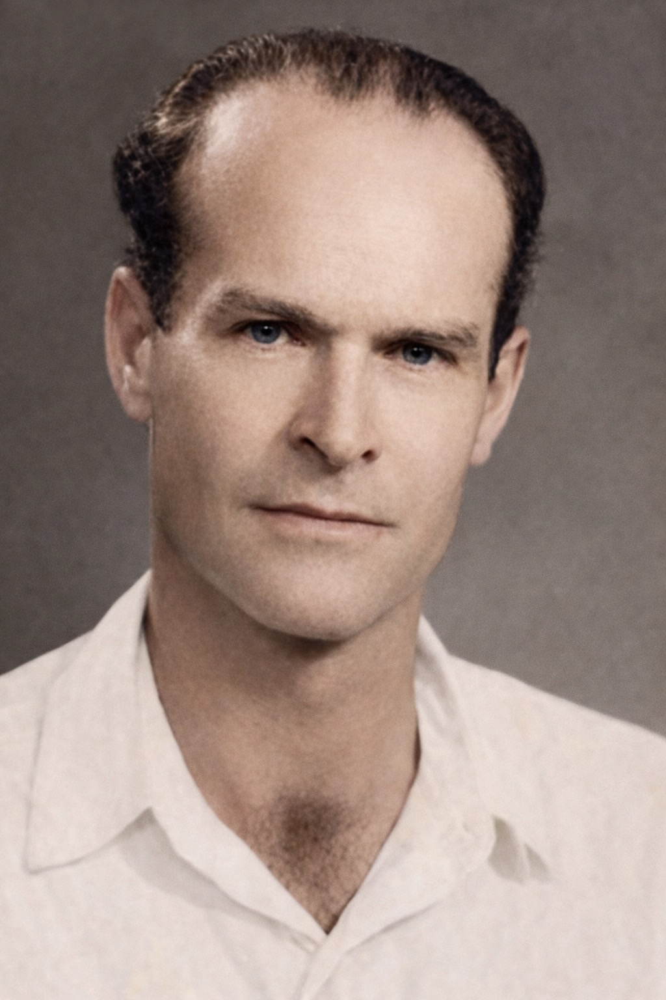
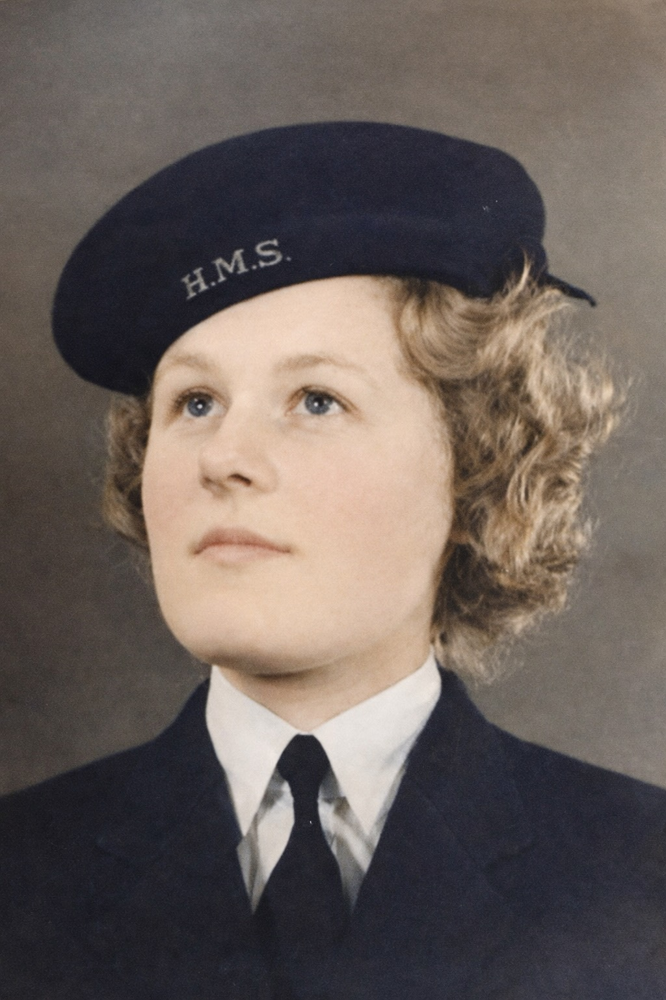
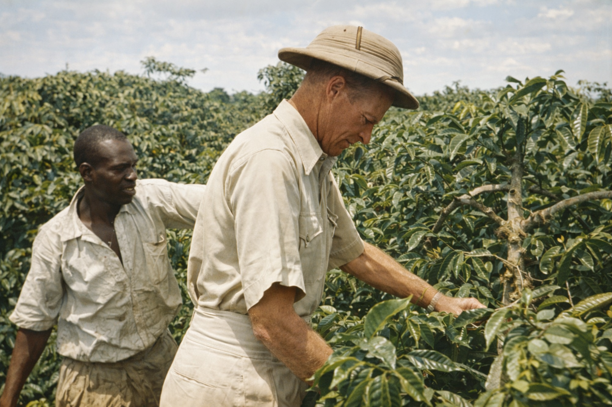
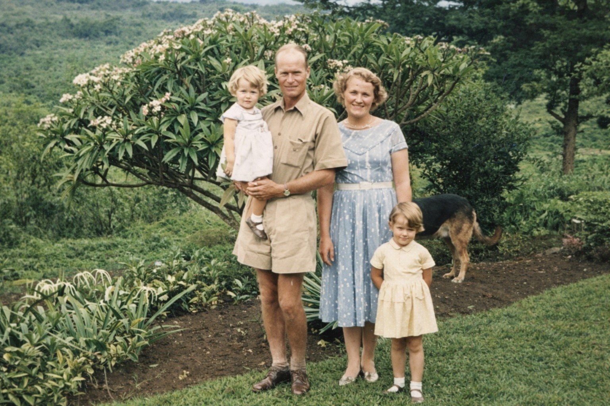
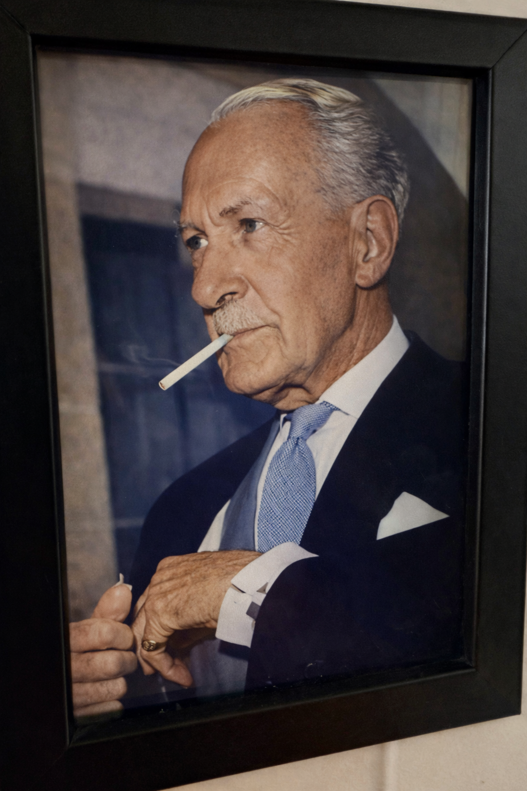
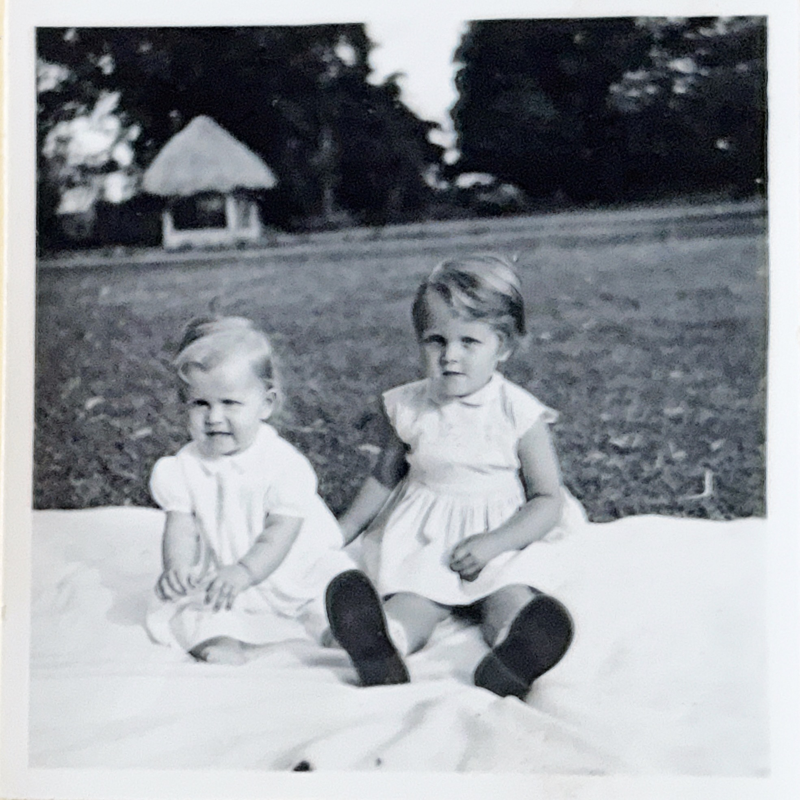
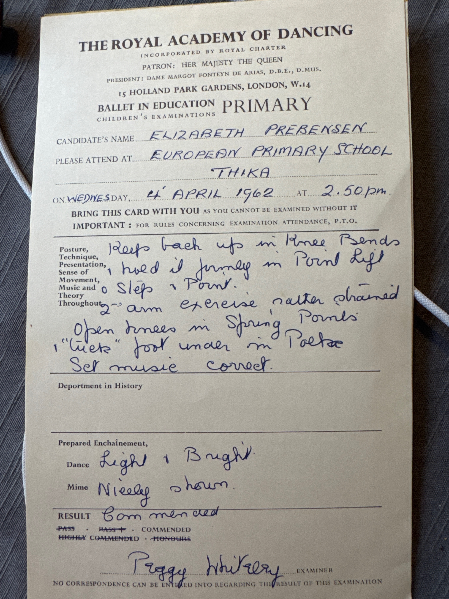
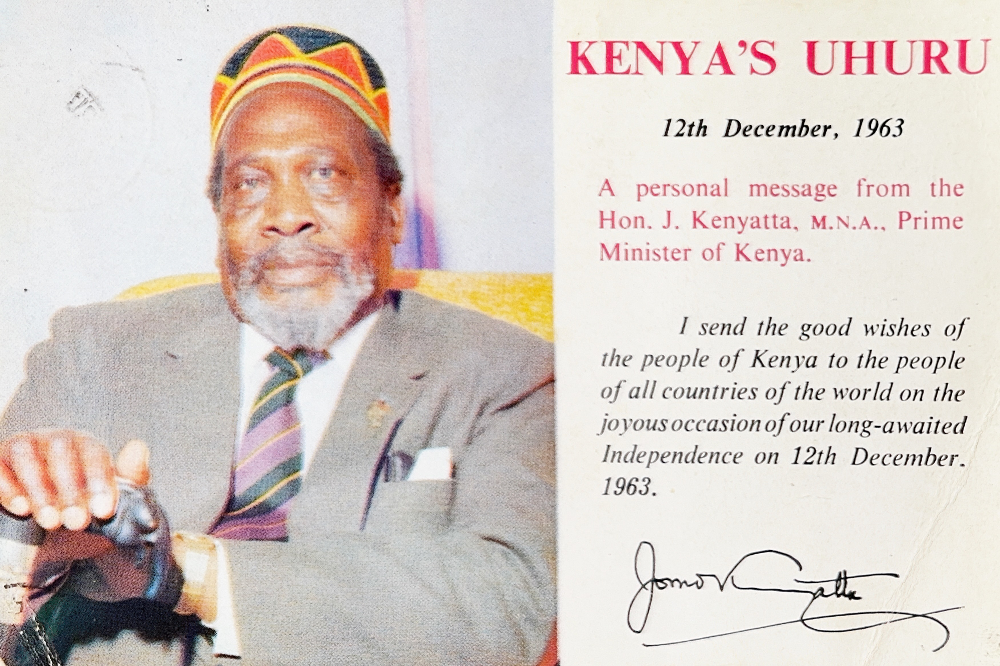
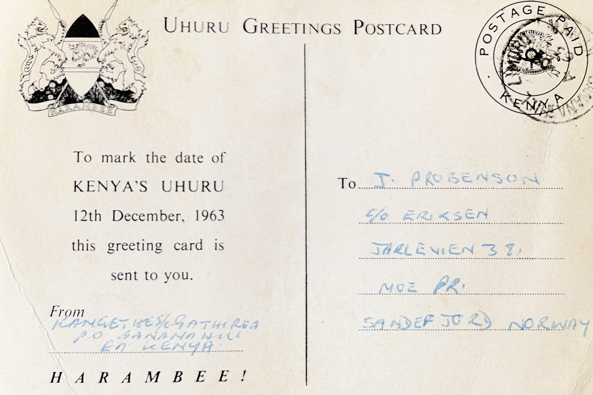
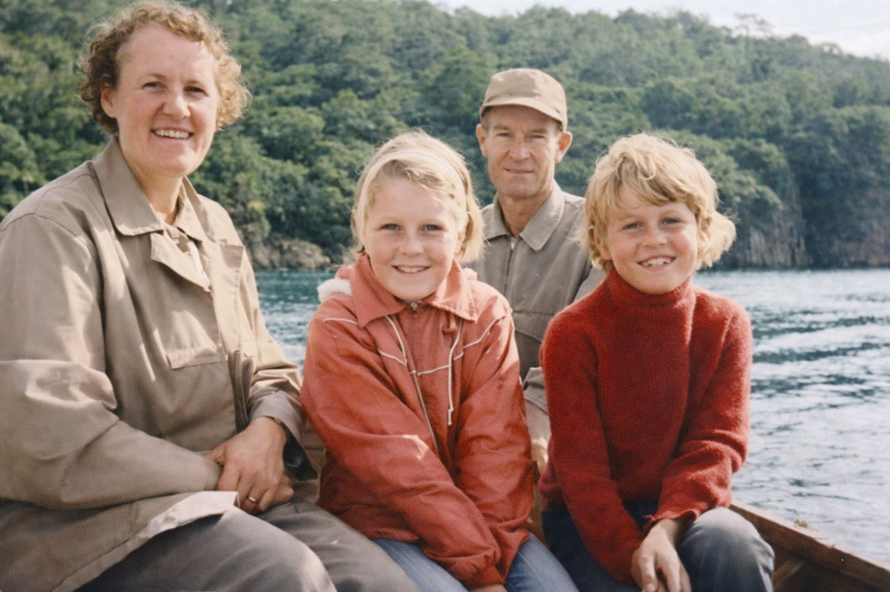

Kenya Before the Europeans
Before the arrival of European powers, the land that would become Kenya was home to more than forty distinct peoples. The Kikuyu farmed the fertile highlands around Mount Kenya. The Maasai moved with their cattle across the Rift Valley grasslands. The Luo fished on Lake Victoria. The Kamba traded between the coast and the interior. Along the coast, Swahili city-states had traded with Arabia, Persia, and India for centuries.
There was no single political entity called "Kenya." The boundaries that would later define the colony were drawn in European conference rooms, most decisively at the Berlin Conference of 1884–85, where European powers carved Africa into spheres of influence with little regard for the people who lived there.
In the 1890s, catastrophe struck the highlands. Rinderpest killed vast herds of cattle. Smallpox and famine followed. The Kikuyu population was severely reduced. When British administrators arrived, they looked at depopulated land and called it "empty" — a judgement that would underpin decades of dispossession.
The Empire Arrives
Britain's interest in East Africa was strategic. The Suez Canal, opened in 1869, had made the sea route to India shorter, and control of the East African coast meant control of that route. In 1888, the Imperial British East Africa Company (IBEA) was chartered to manage the region commercially. When the company went bankrupt, the British government stepped in directly, declaring the East Africa Protectorate in 1895.
The defining act of early colonisation was the Uganda Railway. Built between 1896 and 1901 from Mombasa on the coast to Kisumu on Lake Victoria, the railway was meant to secure Uganda and the headwaters of the Nile. It cost £5.5 million — a sum that had to be justified. The solution was settlement: bring Europeans to farm the land the railway passed through, and generate the freight traffic to make the investment pay.
The railway reached Nairobi in 1899, turning a swampy watering hole into the administrative capital of the colony. From there, branch lines and roads pushed into the highlands — including toward Thika, where our story eventually unfolds.
From the interview
"To speak about Kenya, it was a British colony. The British were especially keen to get Europeans out there to buy land and start farms and cultivate."
The Settlers
The first European settlers arrived around 1900. Among the earliest and most influential was Lord Delamere, a flamboyant English aristocrat who acquired vast estates in the Rift Valley and became the political leader of the settler community. He experimented with wheat, cattle, and eventually found that the highlands were superbly suited to European-style farming — provided the land could be taken cheaply and African labour secured at low wages.
The Crown Lands Ordinance of 1902 gave the colonial government the power to grant 99-year leases on "unoccupied" land to European settlers. The 1915 revision extended leases to 999 years and further tightened African land rights. Land that the Kikuyu considered theirs by ancestral right was reclassified as Crown land and handed to settlers.
Settlement was not only British. South Africans, Scandinavians, Greeks, Italians, and others came. Norwegian settlers formed a small but notable community. The Koren family, who would later draw Jacob Prebensen to Kenya, were part of this Norwegian presence. A book titled Norwegians in Colonial Kenya documents their stories.
In 1920, the Protectorate was formally renamed the Colony and Protectorate of Kenya, signalling that Britain intended to stay.


From the interview
"One of those contacts was his cousin, Vesla Koren, who had moved out to Kenya with her husband, Dan Koren. [...] I think it was through her that Jacob got the idea of going out there himself and trying a life in the settler world in Kenya."
The White Highlands
The colonial government reserved a vast stretch of the most fertile land in Kenya — the Central Highlands and parts of the Rift Valley — exclusively for European ownership. These were known as the "White Highlands" or "Scheduled Areas." Africans could not own or lease land there.
The Thika district, where our family would eventually settle, fell squarely within this zone. The area's deep volcanic red soils, moderate altitude of around 1,500 metres, and reliable bimodal rainfall made it ideal for coffee. The Kikuyu, who had farmed this land for generations, were pushed into overcrowded "Native Reserves."
For the displaced, the choices were grim: stay in the shrinking reserves, or return to European farms as labourers. Many became "squatters" — resident workers who received a small plot for subsistence in exchange for a set number of working days on the plantation. This was the system that structured daily life on estates like Rubislaw.
The dispossession was not abstract. It was specific people losing specific land, and it created the grievance that would eventually erupt into the Mau Mau uprising.
From the interview
"The little village where the labourers lived in grass and mud houses that later reminded me of old illustrations in Norwegian children's books. There were open fires, outdoor cooking, and women working with the coffee crop."
Coffee: Kenya's White Gold
Coffee came to Kenya in 1893 when French Catholic missionaries brought Bourbon variety trees from Réunion Island to St. Austin's Mission near Nairobi. Commercial planting began around 1900–1905, after the railway reached Nairobi, and the crop quickly became Kenya's most valuable export — often accounting for 30–40% of total export earnings.
In the 1930s, the Scott Agricultural Laboratories in Nairobi developed two varieties that would make Kenyan coffee famous worldwide: SL28 and SL34. These produced beans with exceptional brightness and complex fruit notes. By the 1950s, when the Prebensen family was at Rubislaw, these were almost certainly the varieties growing on the estate.

How the plantation worked
The annual cycle began after the rains, when coffee trees flowered with white blossoms. Nine months later, the cherries ripened to a deep red and were picked by hand — selectively, only the ripe ones, pass after pass through the rows. The pickers were overwhelmingly Kikuyu women and men from the surrounding area.
After picking, the cherries went to the estate's wet processing facility — the "coffee plant" that the family remembers. There, pulping machines stripped the outer red skin away, revealing the parchment-covered bean. The beans were fermented in water tanks, washed clean, and then spread on raised wire-mesh drying tables to dry slowly in the equatorial sun. Workers turned the beans regularly. This is what a child remembers: warm white beans in her hands.
All Kenyan coffee was sold through the Coffee Board of Kenya at weekly auctions in Nairobi. The estate manager — Jacob, in this case — kept the accounts and oversaw operations, but the Sutcliffe family owned the plantation and took the profits.
The ban on African coffee
One of the most revealing facts about colonial Kenya: Africans were largely prohibited from growing coffee until the mid-1950s. The official reason was disease control. The real reason was economic — settlers feared competition and the loss of cheap labour. If African farmers could grow their own cash crop, why would they work on European estates?
The Swynnerton Plan of 1954 — the year of our subject's birth — finally recommended allowing African smallholders to grow coffee, partly as a strategy to create a loyal African middle class during the Mau Mau Emergency. After independence in 1963, African-grown coffee rapidly overtook estate production.
From the interview
"When the red berries had been picked, they were taken to the coffee plant, where the outer skin was separated from the two white beans. The beans were spread on long tables to dry in the sun. I remember the warmth of them in my hands."
Settler Life
The club
The social world of colonial Kenya revolved around the club. Nearly every district had one. In Thika, the club served as the communal living room for a scattered farming population: bar, veranda, tennis courts, billiard room. Norwegians, Danes, Britons, and other Europeans gathered there for sundowners, dances, card games, birthday parties with cakes and jelly, and the endless rituals of colonial social performance.
Horse racing at Ngong Racecourse in Nairobi was a major event, attended in formal dress — hats, gloves, 1950s dresses. The Muthaiga Club in Nairobi, founded in 1913, was the most prestigious, functioning as the unofficial social headquarters of the colony. All clubs enforced racial segregation. They were for Europeans only.
Kenya's settler world had an infamous reputation thanks to the "Happy Valley" set — a small group of wealthy aristocrats in the Wanjohi Valley known for drug use, adultery, and the unsolved murder of Lord Erroll in 1941. The phrase associated with them was "Are you married or do you live in Kenya?" But Happy Valley was not representative. The vast majority of settlers were working farmers who lived modest, hard-working lives on isolated estates.


The household
The household itself was a small colonial institution. A European family on a coffee estate typically employed a cook (mpishi), a kitchen boy, an aya (children's nurse), a gardener (shamba boy), and a watchman (askari). The cook was the senior domestic employee, almost always male, preparing European-style meals — roasts, stews, puddings — under the mistress's instructions.
The kitchen was typically a separate building from the main house, connected by a covered walkway. This was partly for fire safety, partly to keep cooking heat and smells away from the house, and partly a colonial spatial arrangement separating servant work areas from family living space. Inside the barbed-wire compound, but physically separate.
The domestic staff were African, the instructions were in English or Swahili, and the entire arrangement rested on cheap labour and racial hierarchy — however warmly individuals might have felt toward one another.
The memsahib
Settler women — known by the Hindi-derived term memsahib — managed the household, planned menus, instructed the cook, and drove to town for supplies. The Singer sewing machine was ubiquitous: women made children's clothes, curtains, costumes, and everything else that could not easily be bought.
Many, like Rosemary Prebensen, were formidable and independent. They drove fast on dirt roads, carried pepper spray in case of breakdown, handled snakes, managed the farm during their husband's absence, and attended horse races in formal dress. They played the football pools by post, waiting weeks for British results. Self-reliance was not optional on a remote coffee estate.


Children between worlds
Children grew up bilingual, speaking Swahili with the aya and household staff and English with their parents. Many spoke better Swahili than English in their early years. They attended racially segregated schools where teaching methods were strict — slapping, caning, and rapping knuckles were normal.
They played on the farm, watched coffee being processed, and were sent to the club in their pyjamas when their parents went to parties. Birthday treats might mean Nairobi National Park or the Snake Park. Swimming lessons happened at the Blue Post Hotel in Thika, a well-known landmark by the Chania Falls. It was a childhood of freedom and constraint, warmth and segregation, all at once.
From the interview
"If our parents went to a party there, Wenche and I might be put in the back seat of the car in our pyjamas while a watchman came from time to time to look in on us. I was not afraid. That was simply normal then, though it sounds mad now."
Mau Mau
By the late 1940s, decades of land dispossession, labour exploitation, and political exclusion had created an explosive situation in Kenya. The Kikuyu, who had lost the most land and lived closest to the European estates, were at the centre of resistance. Over a million Kikuyu were crowded into shrinking reserves while roughly 30,000 European settlers controlled around 12,000 square miles of the best agricultural land.
The Kenya African Union, led by Jomo Kenyatta from 1947, pursued reform through constitutional means but was consistently blocked. Returning African veterans of the Second World War — men who had fought for Britain — came home to find they still had no land rights and were still required to carry the kipande, a registration pass in a metal container worn around the neck.
On 20 October 1952, following the assassination of the loyalist chief Waruhiu wa Kungu, Governor Sir Evelyn Baring declared a State of Emergency. In Operation Jock Scott that same night, Kenyatta and over 180 others were arrested. The British called the movement "Mau Mau" — a term whose origins remain debated and which the fighters themselves did not always use.
Forest fighters under Dedan Kimathi waged a guerrilla war from the Aberdare forests and the slopes of Mount Kenya. The British deployed regular army units, RAF bombers, the Kenya Police, and — crucially — the Kikuyu Home Guard, loyalist Africans armed by the colonial government. The war was as much a Kikuyu civil conflict as an anti-colonial uprising.
The British established a network of detention camps — what Caroline Elkins later called "Britain's Gulag" — holding an estimated 80,000 to 160,000 detainees. Conditions were brutal: systematic torture, forced labour, starvation, and sexual violence. In 2013, the British government formally acknowledged the abuse and agreed to compensate over 5,000 elderly Kenyans.
The Thika district
For settler families in the Thika area, the Emergency was not abstract. Thika was surrounded by Kikuyu reserves and was a focal point of Mau Mau activity. Farms were enclosed with barbed wire. Guard dogs patrolled at night. Watchmen — usually non-Kikuyu, often Maasai or Kamba — were posted. European men carried handguns at all times. Women were trained to use firearms. Settler homes had reinforced safe rooms. Children were taught emergency drills.
The human cost was vastly asymmetric. Thirty-two European civilians were killed during the entire Emergency. Over 1,800 loyalist African civilians were killed. On the other side, official British figures record over 11,000 Mau Mau fighters killed and 1,090 hanged by colonial courts. Modern historians estimate total African deaths — including those in detention — at many times that number.
From the interview
"What I do remember is what remained of it in the atmosphere: the guns, the barbed wire, the watchmen, the dogs, the whole security apparatus around the farms. That was the world I entered."
Uhuru
Although the military campaign against Mau Mau was largely over by the late 1950s, the uprising had fatally undermined the legitimacy of white settler rule. The Emergency officially ended on 12 January 1960. Within weeks, Britain began negotiating Kenya's political future at the first Lancaster House conference in London.
The January 1960 conference was a watershed. Colonial Secretary Iain Macleod established the principle of African majority rule. The settler dream of continued European political dominance was over. Land values dropped. European farms flooded the market.
Kenyatta was released from restriction in August 1961. His party, KANU, won the pre-independence elections in May 1963. He became Prime Minister on 1 June 1963.


The exodus
At its peak in the early 1950s, Kenya's European population was around 60,000 to 80,000. Between 1960 and 1964, thousands left. The majority went to Britain, South Africa, Rhodesia, or Australia. Some Scandinavian families returned to their countries of origin.
The Prebensen family, with no obvious home in either Britain or Norway, faced an agonising choice. Jacob had fled Norway. Rosemary had no fixed home in England. Rhodesia was considered and rejected. South Africa was ruled out on principle — Jacob did not support apartheid. In the end, Norway won.
They packed wooden crates, said goodbye to the life they had built, and took the night train to Mombasa. From there, they sailed via Cape Town to a country Jacob had once tried to escape.
Kenya became independent on 12 December 1963, at a midnight ceremony in Nairobi where the British flag was lowered and the Kenyan flag raised. Kenyatta adopted a policy of reconciliation, telling settlers that if they took Kenyan citizenship they would be welcome. A "Willing Buyer, Willing Seller" programme, funded partly by British loans, transferred European-owned land to African owners. The era of the White Highlands was over.

From the interview
"The only time I have ever seen my mother truly devastated, with tears streaming down her face, was when she was saying goodbye to her life in Kenya."